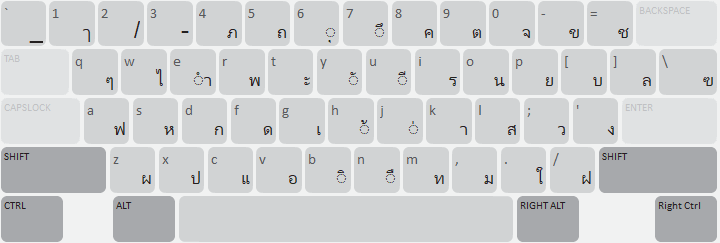
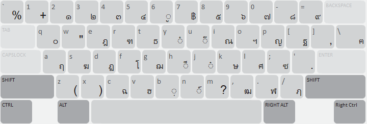
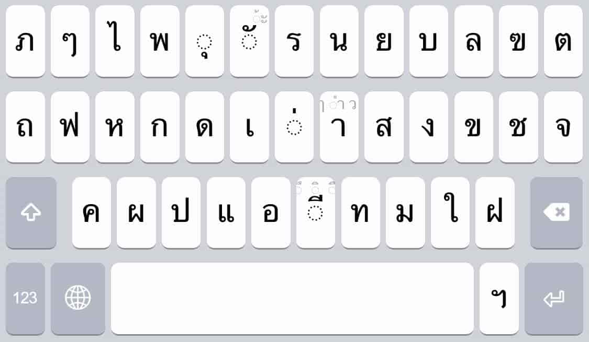
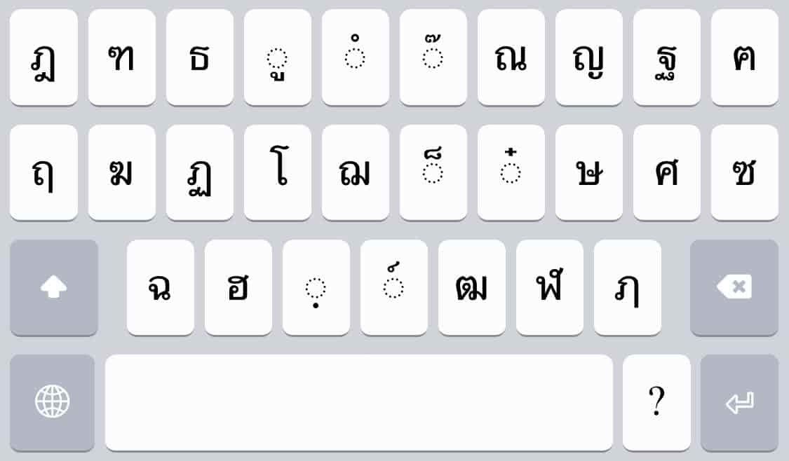
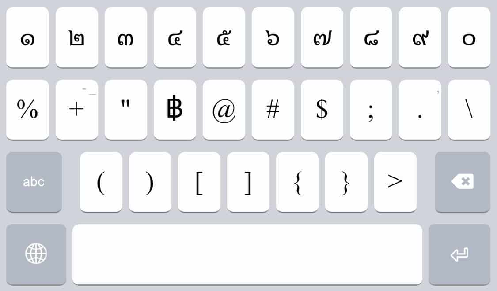
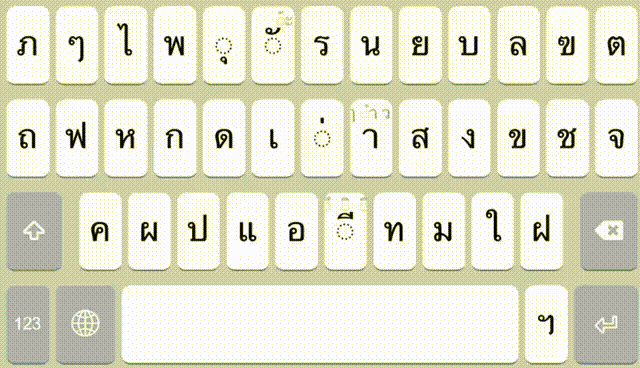

Thai Kedmanee (Mattix) is a Thai script Unicode keyboard based on the standard Thai Kedmanee layout. This keyboard is fully compliant with the Unicode Standard.
Keyboard Home Page: https://keyman.com/keyboards/thai_kedmanee_mattix
This keyboard follows the standard Thai Kedmanee layout. It also allows efficient input of uncommon Thai symbols. Characters are reordered while you type to ensure a consistent underlying sequence of diacritic vowels and tones, making tasks like search and replace much easier. Additional rules prevent you from typing many illegal vowel and tone sequences. This keyboard has also been optimised to take advantage of context-sensitive multiple keyboard switching capabilities in Toolbox (a flat database program) available from SIL.
This is a Unicode keyboard and works with any Unicode font which has support for Thai. The standard Windows fonts Tahoma and Arial Unicode MS include support for this keyboard. To see which fonts on your computer support this keyboard, use the Keyman Font Helper.
This keyboard comes preassigned with a hotkey. You can use the hotkey Ctrl+Shift+T to start the keyboard at any time. To remove or change the hotkey, visit the Hotkeys tab of Keyman Configuration, available from the Keyman menu.
This keyboard includes an On Screen Keyboard view for easy reference. The On Screen Keyboard works best when associated with a QWERTY US layout.


| Description | Output | Keys |
|---|---|---|
| Paiyanyai | ฯลฯ | นน |
| Yamakkan | ๎ | `3 |
| Fongman | ๏ | `" |
| Angkhankhu | ๚ | `ฯ |
| Khomut | ๛ | `ฯฯ |
| Bullet | • | `๑ |
| Zero Width Space | (invisible) | `Space |
The touch layout for mobile devices (Android and iOS) has a slightly different key arrangement that fits all characters across three layers (Default, Shift, and Numeric) and includes a long-press gestures, maintaining user-friendly interactions and clean layout designs.



